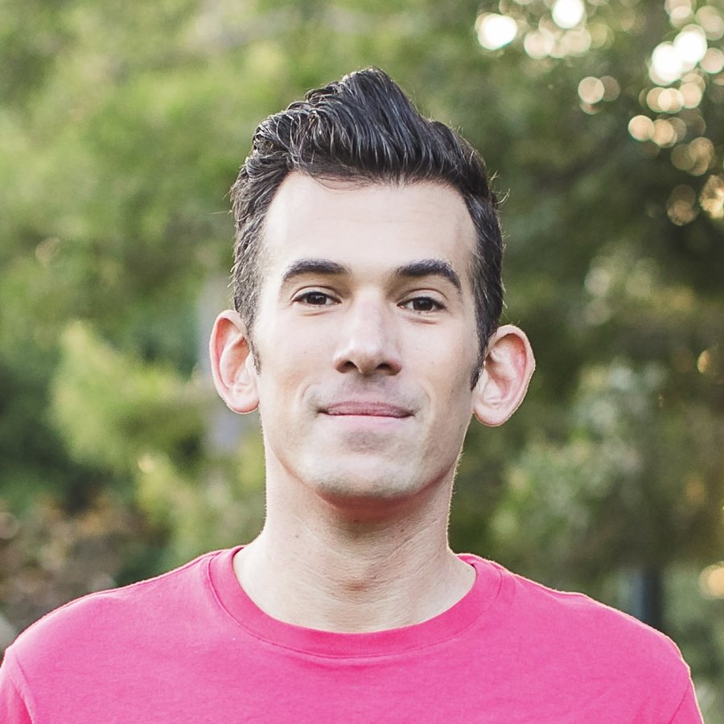

01
Advocate programs
Always-on programs that turn the creators and communities you depend on into advocates, built around what they want, not just what you need.
People trust people. The creators they follow, the public figures they admire, the communities they belong to.
That's where reputation is really built. The companies that get this build real relationships first, and the credibility follows.
Help creators reach their own goals first, and they'll speak up for you because they want to.
The right creators carry cultural and commercial weight that follower counts don't show.
The people you've supported all along show up when it counts, whether it's a launch or a crisis.
Measure what actually moves your reputation: how people feel about you, whether they'll vouch for you and whether the rooms that matter respond.
A stronger reputation with the people who matter most to you. Creators are at the heart of this work, and the same approach works for any community that can speak up for you, from public figures and athletes to customers and fans.
Always-on programs that turn the creators and communities you depend on into advocates, built around what they want, not just what you need.
For when the voices you need aren't there yet. Incubators, grants and training that find, fund and grow them.
For knowing who actually moves your audience. An audit of which creators and voices carry real cultural and commercial weight, beyond follower count.
For turning an audience's trust into revenue without wearing it down. Sponsorship and partnership models built to last.

I'm Brett Peters. As founding staff at the It Gets Better Project, I spent nearly a decade growing a grassroots campaign into a global nonprofit and movement in 25+ countries, with partners including Google, YouTube, MTV, ABC, Lexus and Doritos.
Then TikTok recruited me to build its education and philanthropy partnerships, and later tapped me to create and lead its global creator advocacy and reputation function. I built both from scratch. Over six and a half years, the work stayed the same: building programs that made the people TikTok depended on most, from publishers and nonprofits to its biggest creators, want to stay, grow and speak up for it.
The name is the goal: to create sunny corners. That means seeing where the light isn't reaching, bringing it where it's needed and helping people and organizations already doing good work be seen in the brightest light possible. I'm based in Miami.